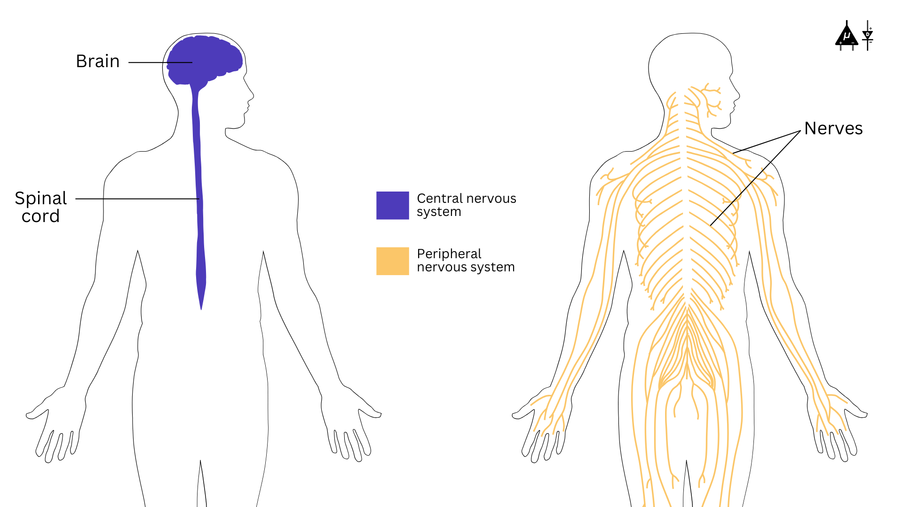
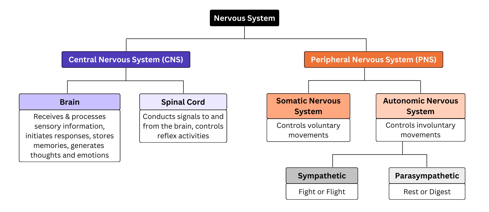
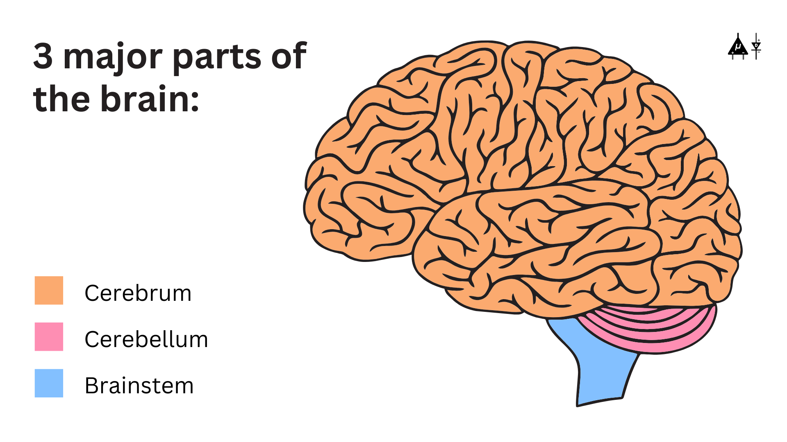
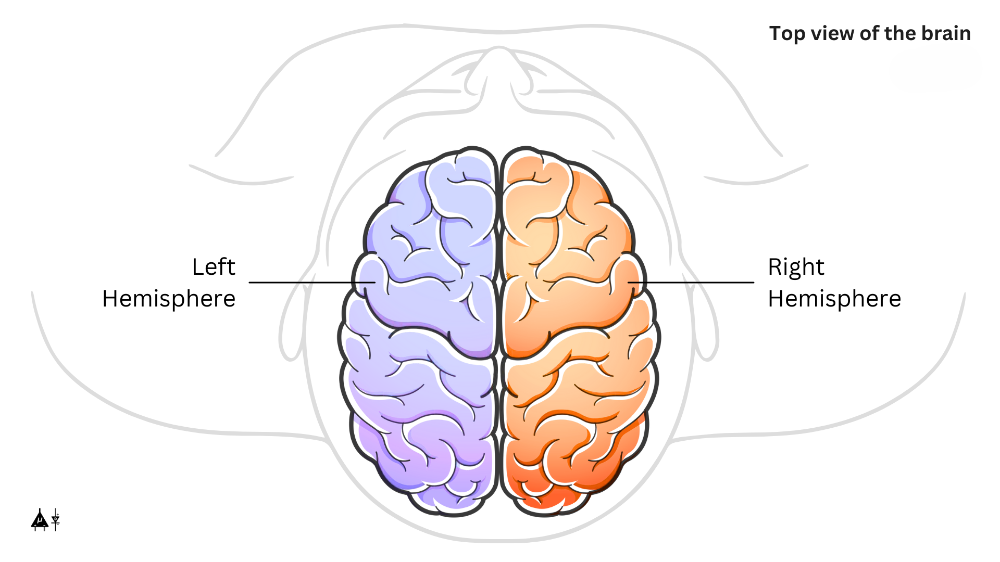
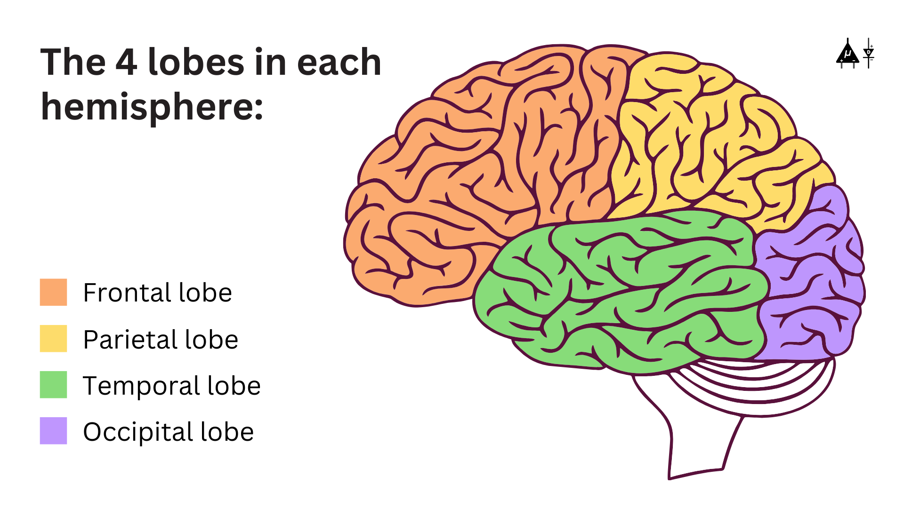
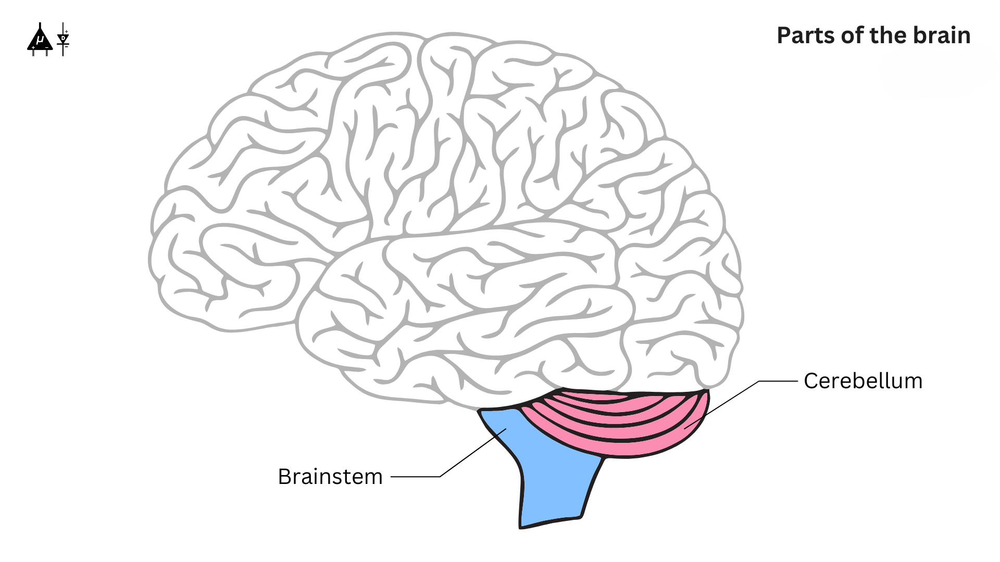
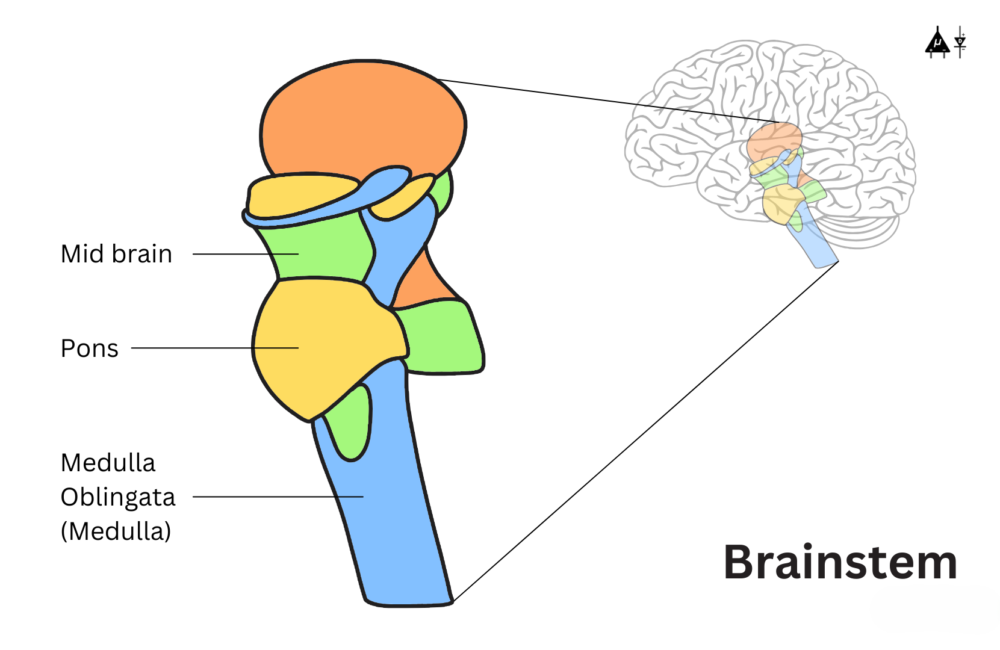
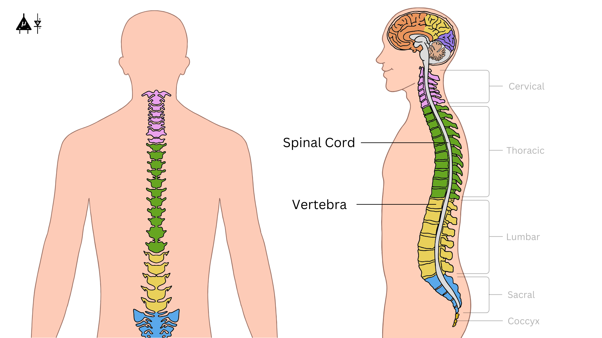
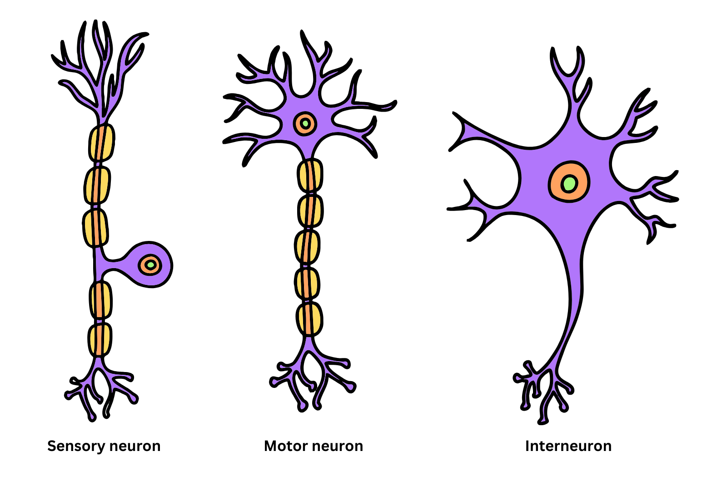
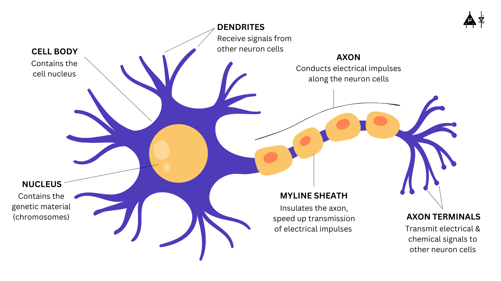

Modul 1: Sistem Saraf Manusia#
1.1 Pengantar#
Sistem saraf manusia terdiri dari otak, sumsum tulang belakang, saraf dan merupakan salah satu sistem yang paling kompleks dan vital dalam tubuh, bertanggung jawab untuk menerima, mentransmisikan, dan memproses informasi. Ini bertindak sebagai pusat komando tubuh dan memungkinkan komunikasi antara bagian-bagian tubuh yang berbeda, memungkinkan organisme berinteraksi dengan lingkungannya.
Ini dibagi menjadi dua bagian utama:
Sistem Saraf Pusat (CNS)
Sistem Saraf Perifer (PNS)

Jenis sistem saraf#

Ikhtisar sistem saraf#
Ikhtisar ini adalah representasi yang disederhanakan dan tidak menunjukkan sistem saraf lengkap. Anda dapat merujuk ke buku teks lanjutan untuk penjelasan lebih lanjut.
1.2 Sistem Saraf Pusat (CNS)#
Sistem saraf pusat (CNS) adalah pusat komando tubuh dan terdiri dari otak dan sumsum tulang belakang Anda. Otak dilindungi oleh tengkorak (juga dikenal sebagai tengkorak) sementara vertebra Anda melindungi sumsum tulang belakang.
1.2.1 Otak (Encephalon)#
Otak adalah organ yang paling kompleks yang berkomunikasi dengan tubuh dengan mengirim dan menerima sinyal kimia dan listrik. Beberapa sinyal tetap dalam otak, sementara yang lain ditransmisikan melalui sumsum tulang belakang dan melalui jaringan saraf ke bagian tubuh yang jauh. Komunikasi ini bergantung pada miliaran neuron yang membentuk sistem saraf pusat. Struktur otak dapat dibagi menjadi 3 bagian utama :

3 bagian utama otak manusia#
Fakta Menarik
Otak beratnya sekitar 3 pon pada orang dewasa rata-rata dan mengandung sekitar 60% lemak sebagai berat keringnya. Sisanya 40% adalah kombinasi air, protein, karbohidrat dan garam.
Otak itu sendiri bukan otot. Ini mengandung pembuluh darah dan saraf, termasuk neuron dan sel glial.
Cerebrum#
Cerebrum adalah bagian terbesar otak yang dapat dibagi menjadi 2 hemisfer, kanan dan kiri.

2 hemisfer otak#
Fakta Menarik
Hemisfer kanan mengontrol sisi kiri tubuh, dan hemisfer kiri mengontrol sisi kanan tubuh.
Kedua bagian berkomunikasi satu sama lain melalui struktur berbentuk C besar yang disebut corpus callosum yang merupakan bagian tengah cerebrum.
Setiap hemisfer dibagi lebih lanjut menjadi empat lobus utama:
Lob frontal: Lob otak terbesar, terletak di depan kepala, lob frontal terlibat dalam karakteristik kepribadian, pengambilan keputusan, gerakan, bicara dan bau.
Lob parietal: Terletak di bagian tengah otak, lob parietal membantu seseorang mengidentifikasi objek dan memahami hubungan spasial (di mana tubuh seseorang dibandingkan dengan objek di sekitarnya). Lob parietal juga terlibat dalam memproses informasi sensorik (sentuhan, nyeri, suhu) dan memahami bahasa lisan.
Lob temporal: Diposisikan di sisi otak, lob temporal terlibat dalam memori jangka pendek, bicara, ritme musik dan beberapa derajat pengenalan bau.
Lob oksipital: Ditemukan di bagian belakang otak, lob oksipital terutama bertanggung jawab untuk memproses informasi visual.

Lobus otak yang berbeda#
Cerebellum#
Cerebellum (otak kecil) adalah bagian otak berukuran kepalan tangan yang terletak di bagian belakang kepala dan di atas batang otak. Fungsinya adalah mengkoordinasikan gerakan otot sukarela dan mempertahankan postur, keseimbangan dan keseimbangan. 2 hemisfer cerebellum dihubungkan oleh vermis.

Cerebellum dan batang otak#
Brainstem#
Brainstem (tengah otak) menghubungkan cerebrum ke sumsum tulang belakang. Brainstem termasuk midbrain, pons dan medulla.
Midbrain: Terlibat dalam kontrol motor dan pemrosesan auditori/visual.
Pons: Ini adalah koneksi antara midbrain dan medulla. Ini mengontrol tidur, respirasi, dan beberapa fungsi motor.
Medulla oblongata: Di bagian bawah brainstem, medulla adalah tempat otak bertemu sumsum tulang belakang. Medulla sangat penting untuk kelangsungan hidup, karena mengatur fungsi tubuh vital, termasuk detak jantung, pernapasan, sirkulasi darah, dan keseimbangan oksigen dan karbon dioksida. Ini juga mengontrol tindakan refleks seperti bersin, muntah, batuk, dan menelan.

Ikhtisar brainstem#
1.2.2 Sumsum Tulang Belakang#
Sumsum tulang belakang dimulai di pangkal medulla dan melewati pembukaan besar (foramen magnum) di bagian bawah tengkorak. Didukung oleh vertebra, ini berfungsi sebagai jalan komunikasi antara otak dan sisanya tubuh. Struktur tubular panjang ini mentransmisikan informasi sensorik dari tubuh ke otak dan mengirim perintah motor dari otak ke tubuh. Selain itu, ini bertanggung jawab atas tindakan refleks, yang merupakan respons cepat dan tidak sadar terhadap stimulus.

Sumsum tulang belakang dan vertebra#
1.3 Sistem Saraf Perifer (PNS)#
Sistem Saraf Perifer menghubungkan Sistem Saraf Pusat ke sisanya tubuh dan bertanggung jawab untuk mentransmisikan sinyal ke dan dari berbagai organ dan jaringan. Ini dibagi menjadi dua sistem utama:
1.3.1 Sistem Saraf Somatik (SNS)#
Sistem saraf somatik mengontrol gerakan sukarela dan mentransmisikan informasi sensorik ke dan dari sistem saraf pusat. Ini terdiri dari:
Neuron Sensorik (Neuron Aferen): Neuron ini membawa sinyal dari reseptor sensorik (kulit, otot, sendi) ke CNS, memungkinkan kita merasakan sensasi seperti nyeri, suhu, dan sentuhan.
Neuron Motor (Neuron Eferen): Neuron ini mentransmisikan perintah dari CNS ke otot skeletal, memungkinkan gerakan sukarela seperti berjalan, berbicara, dan mengambil objek.
1.3.2 Sistem Saraf Otonom (ANS)#
Sistem saraf otonom mengontrol proses fisiologis tidak sadar, seperti detak jantung, pencernaan, dan laju pernapasan. Ini beroperasi tanpa kontrol sadar dan dibagi menjadi dua bagian utama:
Sistem Saraf Simpatetik: Dikenal sebagai sistem “lawan atau lari”, ini mempersiapkan tubuh untuk situasi stres atau darurat dengan meningkatkan detak jantung, melebarkan pupil, melepaskan adrenalin, dan mengalihkan aliran darah ke otot.
Sistem Saraf Parasimpatetik: Ini melakukan kebalikan dari sistem saraf simpatetik. Sering disebut sebagai sistem “istirahat dan cerna”, ini mempromosikan relaksasi dengan memperlambat detak jantung, mempromosikan pencernaan, dan menghemat energi setelah acara stres.
1.4 Neuron#
Neuron adalah blok bangunan sistem saraf dan bertanggung jawab untuk menerima dan mentransmisikan sinyal elektrokimia di seluruh tubuh.
Fakta Menarik
Otak kita terbuat dari sekitar 86 miliar neuron (100 triliun koneksi sinaptik).
1.4.1 Jenis neuron#
Berdasarkan Fungsi#
Neuron Sensorik: Mentransmisikan informasi sensorik (misalnya nyeri, suhu, tekanan) dari reseptor ke CNS.
Neuron Motor: Membawa perintah dari CNS ke otot dan kelenjar, memungkinkan tindakan seperti kontraksi otot atau pelepasan hormon.
Interneuron: Neuron ini ditemukan di CNS dan bertindak sebagai konektor antara neuron sensorik dan motor. Mereka membantu memproses dan mengintegrasikan informasi. Ini adalah jenis neuron yang paling umum.

1.4.2 Struktur neuron#

Struktur neuron#
Badan Sel (Soma): Soma, atau badan sel, adalah inti neuron yang mempertahankan sel dan menjaga neuron berfungsi secara efisien. Ini dikelilingi oleh membran yang melindunginya dan memungkinkannya berinteraksi dengan lingkungannya langsung
Nukleus: Nukleus mengandung materi genetik (kromosom) dari sel neuron.
Dendrit: Dendrit adalah bagian neuron berbentuk akar pohon yang bertanggung jawab untuk menerima informasi dari neuron lain dan mentransmisikan sinyal listrik ke badan sel.
Akson: Akson adalah struktur seperti ekor neuron yang bertanggung jawab untuk mentransmisikan impuls listrik (potensial aksi) menjauh dari badan sel menuju neuron lain.
Selubung mielin: Selubung mielin adalah lapisan berlemak yang mengisolasi akson, mempercepat transmisi sinyal.
Sinaps: Neuron tidak saling menyentuh, tetapi di mana satu neuron mendekati neuron lain, sinaps terbentuk di antara keduanya yang bertindak sebagai persimpangan antara dua neuron di mana neurotransmitter dilepaskan untuk mentransmisikan sinyal ke neuron berikutnya.
Fakta Menarik
Ada neuron tanpa akson juga, di mana sinyal ditransmisikan dan diterima keduanya oleh dendrit.
1.5 Sel glial#
Sel glial (atau neuroglia) adalah sel non-neuronal dari sistem saraf yang memberikan dukungan struktural, nutrisi, dan perlindungan kepada neuron.
1.5.1 Perbedaan antara neuron dan sel glial#
1.5.2 Jenis sel glial#
1.5.2.1 Di Sistem Saraf Pusat#
1. Mikroglia#
Mikroglia adalah sel pertahanan kecil dari CNS.
Sel imun otak
Bersifat fagositik karena menghilangkan sel mati dan patogen
Mengaktifkan selama infeksi atau cedera
Melepaskan molekul inflamasi saat diperlukan
2. Makroglia#
Makroglia adalah sel glial pendukung besar. Makroglia memiliki berbagai jenis yang diberikan di bawah ini:
a. Astrocyte#
Sel berbentuk bintang
Memberikan nutrisi kepada neuron
Mengatur keseimbangan ion, neurotransmitter (misalnya, penyerapan glutamat)
Membantu dalam pembentukan sinaps
SEL GLIAL PALING MELIMPAH DI CNS
b. Oligodendrocyte#
Menghasilkan mielin di sekitar beberapa akson CNS
Satu oligodendrocyte dapat memielinisasi banyak akson
Meningkatkan kecepatan konduksi potensial aksi (konduksi saltatori)
c. SEL EPENDIMAL#
Melapisi ventrikel otak dan kanal sentral sumsum tulang belakang
Menghasilkan dan mengedarkan cairan serebrospinal (CSF)
Bagian dari pleksus koroid
1.5.2.2 Di Sistem Saraf Perifer#
1. SEL SCHWANN#
Mirip dengan oligodendrocyte
Menghasilkan mielin di sistem saraf perifer
Satu sel Schwann memielinisasi hanya satu segmen dari satu akson
2. SEL SATELIT#
Sel satelit di PNS adalah sel glial yang mengelilingi badan sel neuronal di ganglia dan mengatur lingkungan kimia mereka, memberikan dukungan, perlindungan, dan bantuan metabolik.
1.6 Ringkasan#
Dalam modul ini, kita mempelajari struktur dan organisasi dasar sistem saraf manusia. Kita mempelajari CNS (otak dan sumsum tulang belakang) dan PNS (divisi somatik dan otonom) dan bagaimana mereka bekerja sama untuk mengontrol tubuh. Kita menjelajahi neuron - jenisnya (sensorik, motor, interneuron) dan strukturnya (dendrit, soma, akson, mielin, sinaps) - sebagai sel utama yang mentransmisikan sinyal elektrik.
Kita juga mempelajari tentang sel glial, sel pendukung sistem saraf, termasuk astrocyte, oligodendrocyte, sel Schwann, microglia, sel ependimal, dan sel satelit, serta peran penting mereka dalam dukungan, perlindungan, dan mielinasi. Modul ini membangun fondasi yang diperlukan untuk memahami bagaimana neuron menciptakan sinyal elektrik, yang akan dibahas di modul berikutnya tentang Potensial Istirahat.